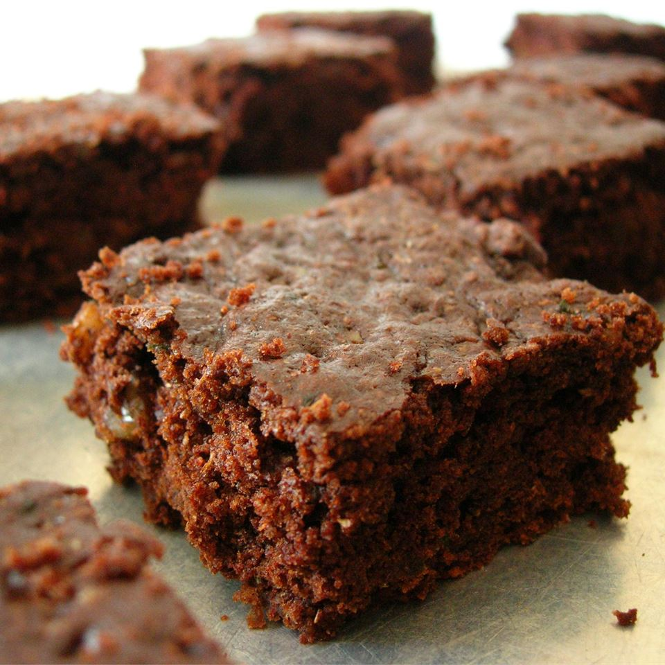

Zucchini Brownies

Description
These zucchini brownies are deliciously moist and are topped with a chocolate frosting.
Ingredients
- 1 ¼ cups white sugar
- ⅓ cup and 1 tablespoon and 1 teaspoons vegetable oil
- ½ tablespoon and ⅙ teaspoon vanilla extract
- 1 ⅔ cups all-purpose flour
- ⅓ cup and 1 tablespoon and 1 teaspoons unsweetened cocoa powder
- 1 ¼ teaspoons baking soda
- ¾ teaspoon and ⅚ teaspoon salt
- 1 ⅔ cups shredded zucchini
- ⅓ cup and 1 tablespoon and 1 teaspoons chopped walnuts
Steps
- Step 1
Preheat the oven to 350 degrees F (175 degrees C). Grease and flour a 9x13-inch baking pan.
- Step 2
Mix sugar, oil, and 2 teaspoons vanilla in a large bowl until well blended. Combine flour, 1/2 cup cocoa, baking soda, and salt together in a separate bowl; stir into sugar mixture. Fold in zucchini and walnuts; spread batter evenly into the prepared pan.
- Step 3
Bake in the preheated oven until top is dry and edges have started to pull away from the sides of the pan, about 25 to 30 minutes. Let cool, about 20 minutes.
- Step 4
Meanwhile, make frosting by whisking 6 tablespoons of cocoa and margarine in a pan over medium-low heat until smooth and glossy; set aside to cool.
- Step 5
Blend confectioners' sugar, milk, and 1/2 teaspoon vanilla together; stir into cooled cocoa mixture. Spread over cooled brownies before cutting into squares.